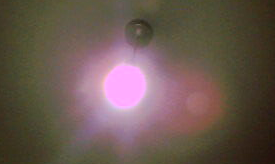
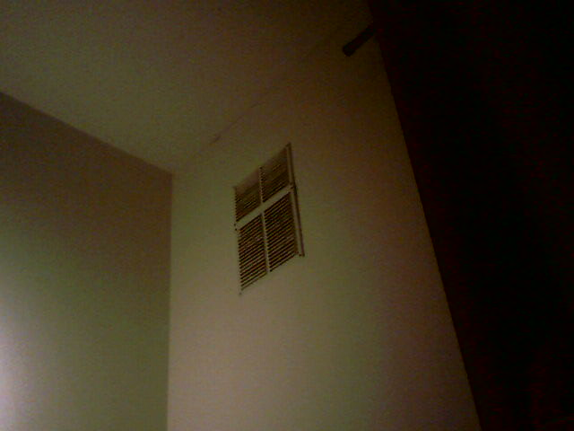

02:54 - I've been trying to set up Jekyll for simpler blogging. It hasn't been working and I've been getting tired and lazy. Well that's not entirey accurate given that I've generally been lazy for the last couple of weeks so there wasn't really any "getting", like since I was already there. The reason for me trying to set Jekyll up is that my boyfriend would like be subscribe to an RSS feed of my blog.
I'll go eat now and then sleep. When I first get up I'll tell you (pl.), my love <3.
(also I'll be adding to this a little just before I get to sleep, as a treat.)

04:44 - That's quite a nice time. Too bad it's so late though. I've got to get to sleep and then get up relatively soon. I ought to better appreciate this laptop I have. I have quite tender feelings towards it. I think a nice machine like this one could help me with my troubles maybe. Ah, I can't be sure.

04:59 - Anywho, I ought to tell you about how I've been spending my time. I didn't watch a youtube video while I ate but I was on my phone, I looked through some subreddits and also went on bluesky for a bit, but it wasn't constant.
The scrolling is quite bad for me though, and I'd like to enjoy my food without any distractions.
Also, between 02:54 and 04:44 I didn't really do much, I think I probably watched some youtube videos or mindlessly checked news and the like.
After Getting Up:
I'd like do some more walking. Quite a lot really, like I'd like it quite a lot and I'd like to do quite a lot more walking. It's very good for me.
10:08 - I am awake, I'll try to get a bit more sleep though and then properly start my day. We'll see.
18:58 - I finally got up a bit before 14:00. It was all quite bad since I was wishing I had stayed up after writing the above message.
I started by filling out some forms and stuff for some official obligations that I had kind of neglected. Then I had to work through some familial obligations. It's all quite tiresome, especially the familial obligations. Maybe that's a little cruel of me, since it's not like they've had easy lives, but it's still frustrating when they lead they're lives in unideal ways and then ask for my help. Then again, that's quite hypocritical of me, given how I lead my life. grrrrrr
19:03 - I was a bit silly with how I spent my time after the obligations too, like I was semi-working but I was mostly just confused and searching in a sort of unplanned way. I often waste time in that way.
I'll go get some groceries now and then make some dinner. I'll bottle the coffee I made since I didn't get around to drinking it. I'll have a bit of green tea so I don't get a headache from lack of caffine.
I really hope to be in bed at a reasonable time and also to get up by 10:00 at the latest. I'll get some treats from the store to entice me out of bed, and anyway it's not to bad for me to get a little fatter.